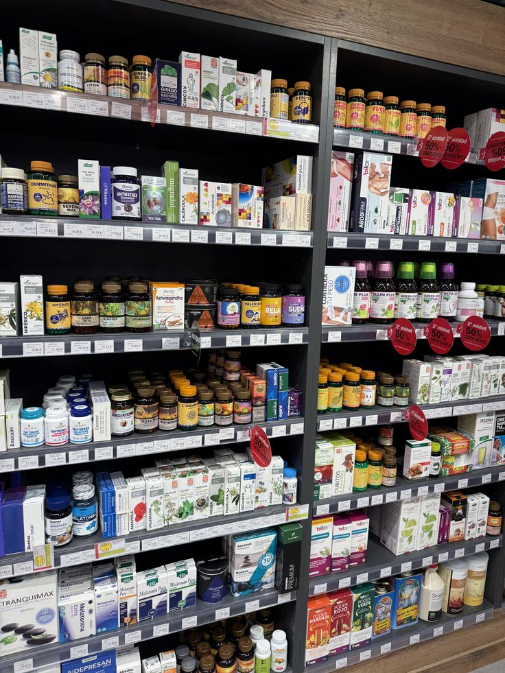
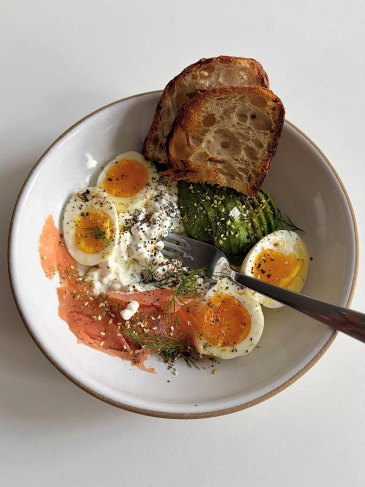
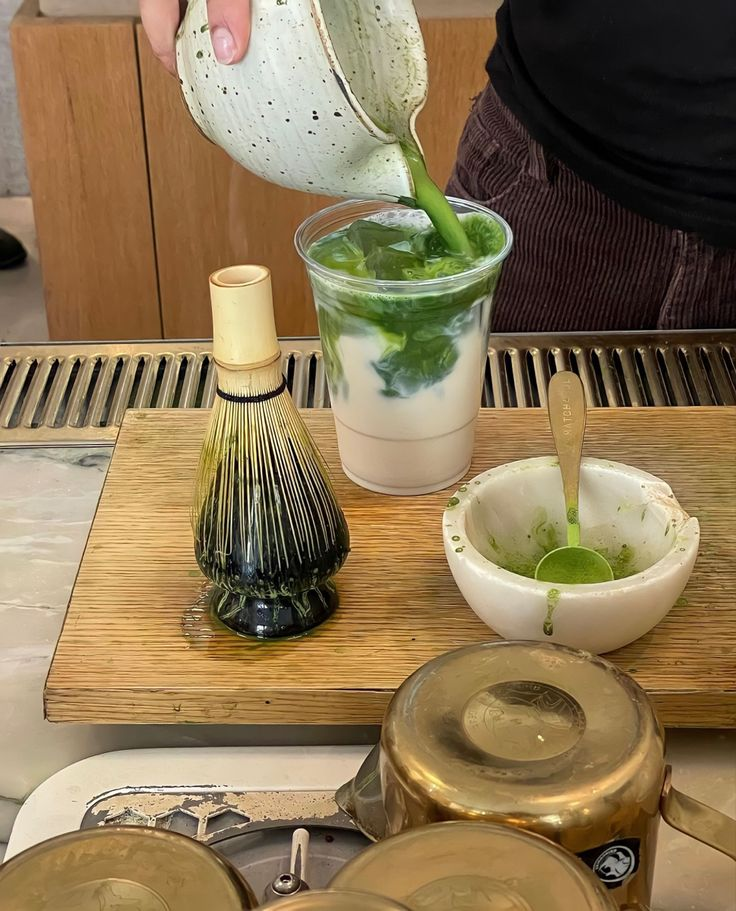
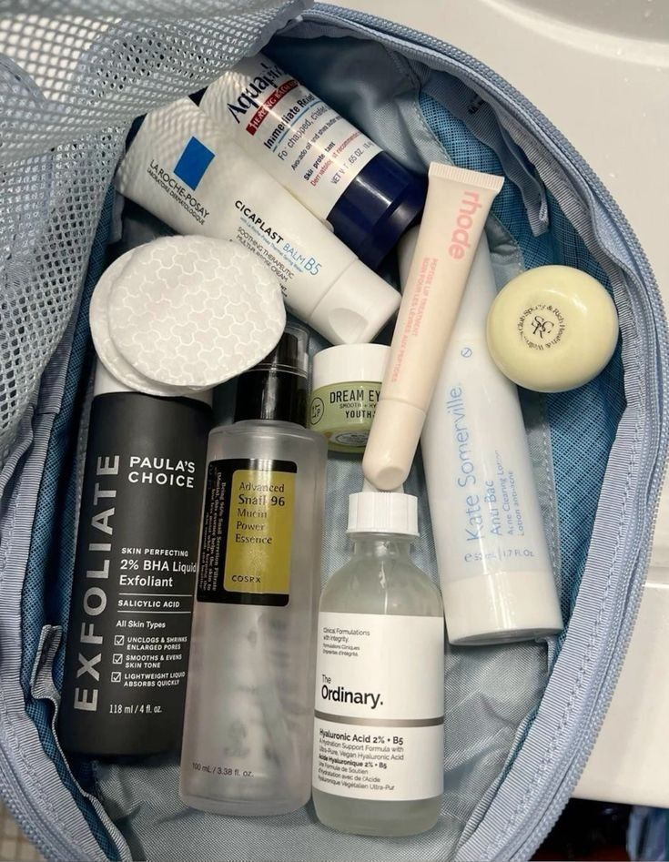
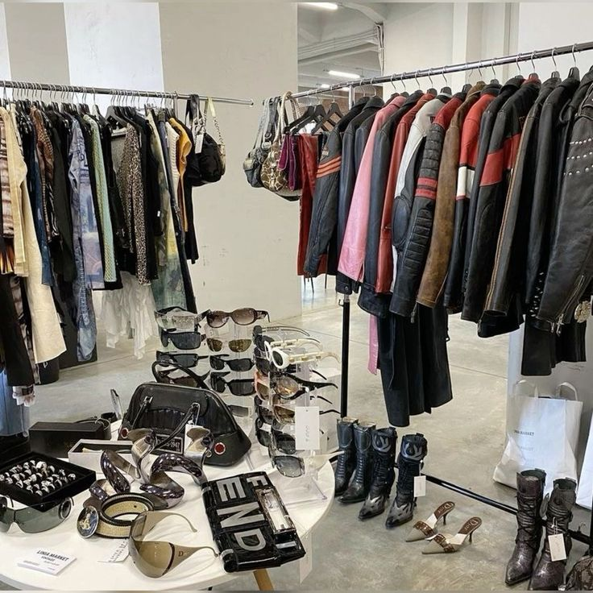
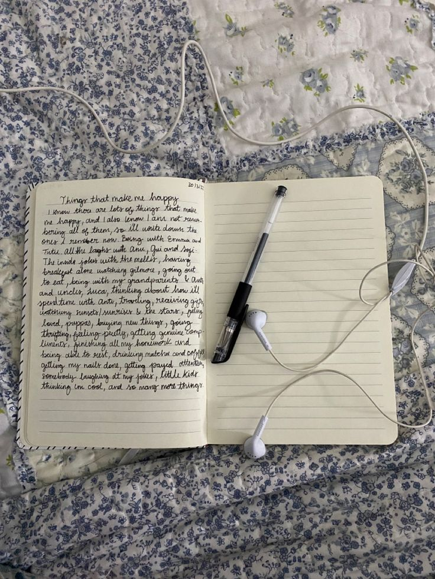

turning data into insights
data scientist
hey! i'm alisha, a third-year data science student at UC Irvine who gets excited about finding patterns in messy datasets and building ml models that actually work. currently leading WiCyS at UCI and spending way too much time tweaking hyperparameters (but honestly, it's worth it when the accuracy jumps).
when i'm not debugging python or exploring new ML architectures, you'll find me DJing at KUCI radio, optimizing my matcha-making process, or going down rabbit holes about nlp and data visualization.
.jpg)
projects

Clinical Drug Interaction & Organ Impairment Checker
integrated GPT-4 to generate clinician-readable drug interaction explanations, engineering prompts with medical accuracy constraints to prevent hallucinations. normalized a complex PDF-based medical dataset, cleaning 250+ medication records with 15+ attributes across inconsistent tables. built a constant-time screening pipeline covering 250+ medications with organ impairment considerations—deployed as a Docker-containerized FastAPI app on Render.
view project →fashion & cultural signals study
built an end-to-end ML pipeline analyzing 10,000+ social media posts to compare algorithm-driven vs. nostalgia-driven fashion trends. used HDBSCAN and K-Means on sentence embeddings to extract 50+ semantic style groups. validated trend diffusion patterns in Tableau against Google Trends.
view project →
college meal plan AI
compressed weekly meal planning from 30–45 minutes to under 10 by building an LLM-powered planning system. engineered type-safe prompt-to-structure pipelines with TypeScript interfaces and JSON schema validation, transforming natural-language AI output into validated recipe objects with 100% database integration success.
view project →boba shop market analysis
designed an end-to-end statistical analysis pipeline for 603 shop reviews, applying clustering and regression to uncover market success drivers. optimized models with GridSearchCV to +18% accuracy and delivered insights via automated dashboards for market-entry strategy.
view on github →AI exoplanet detector
developed a machine learning algorithm to detect exoplanets using telescope light curve datasets. utilized CNNs, KNNs, and SMOTE data augmentation across 380+ test runs to handle class imbalance and push detection accuracy.
view presentation →
UCI housing planning app prototype
designed a mobile app prototype for a design competition focused on streamlining the UCI housing process. led UI/UX design for the planner, compare, and saved routes features—creating intuitive interfaces that help users easily compare options depending on their preferences.
view presentation →experience
president
women in cybersecurity, UC irvine chapter
• revitalized WiCyS from 5 to 20+ active members using data-driven outreach strategies to grow technical engagement
• scaled programming from 3 to 9 events per quarter, tracking participation metrics to continuously improve attendance
• organized a 10-member executive board with clear roles, workflows, and documentation—improving event coordination efficiency by 3x
• delivered hands-on training to 60+ students in OSINT, threat analysis, cloud security, and CTF problem solving
research intern
south dakota state university · mechanical engineering dept
• contributed to biomimetic materials research studying how nacre's layered aragonite microstructure achieves its rare combination of stiffness and toughness—and how to engineer that same balance into lightweight structural composites for space vehicles
• synthesized ~10 research papers on bio-inspired structural design, distilling key microstructural parameters and failure modes to sharpen the team's simulation approach
• analyzed simulation outputs across 5–10 material configurations in python, comparing how variations in layering geometry affected load-bearing performance
technical toolkit
programming
ml & statistics
frameworks & tools
currently learning
in the classroom
-
mathematical statistics III inference theory & estimation — STATS 120C, UCI
-
longitudinal data analysis repeated measures, mixed models, temporal trends
-
introduction to AI search, reasoning, and learning systems
-
database structures relational design, indexing, query optimization
on my own time
-
AI-augmented workflows building faster, smarter processes with LLM tooling
-
data visualization tableau — dashboards, storytelling with data
-
product design figma — UI/UX, prototyping, design systems
-
ML for early PCOS detection early-stage research interest — exploring clinical datasets and diagnostic modeling
leadership & involvement


KUCI radio
dj · student broadcaster
hosting a weekly show where i get to blend music curation with storytelling. it's my creative outlet outside of data science, and honestly one of my favorite parts of college life.
beyond the code

hiking
my favorite way to debug my brain—nothing like fresh air and mountain views to solve that tricky algorithm problem.

baking
turns out precision and experimentation work just as well in the kitchen as they do in data science.

matcha enthusiast
two years deep into my matcha obsession—perfecting the home recipe and hunting down the best matcha treats around town.

skincare research
my other data-driven hobby: analyzing ingredients, testing products, and optimizing my routine.

fashion & style
recently got into curating my wardrobe—it's another creative outlet for self-expression.

journaling
keeps me grounded and focused. my go-to for mental clarity and reflection.
let's build something cool
always down to chat about data, ml projects, or the best matcha spots